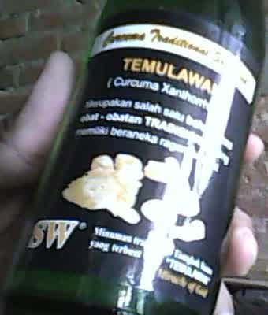

Kemarin waktu beli sate kuda di Serut (Segoroyoso, Pleret, Bantul), saya lihat minuman yang cukup langka. Saya perhatikan, minuman ini terbuat dari sari temulawak (
Curcuma xanthorriza) yang difermentasi.
Sebenarnya saya cukup penasaran. Minuman ini udah sering saya dengar. Tapi karena kemarin cuma bawa uang pas, saya gak bisa beli itu minuman.
Sampai rumah saya searching2 tentang kehalalannya. Dari salah satu blog saya dapat info, minuman seperti ini kadar alkoholnya tidak sampai 1%, artinya masih batas halal sesuai fatwa MUI.
Terlebih di botolnya juga tidak ada cukai alkohol, jadilah saya semangat untuk mencobanya. Nah, hari ini saya balik lagi ke warung tadi buat membeli itu minuman.
Mereknya SW. Pabriknya di Magelang. Harganya murah, Rp3000 kalau isinya saja. Kalau bawa pulang botolnya Rp4000. Kata ibunya yang jual, kalau balik ke warung itu, botolnya bisa dibawa, nanti ditukar uang Rp 1000.
Kalau dilihat labelnya bagus. Biasanya softdrink murah seperti ini hanya pakai label fotokopian. Isinya 270 ml. Komposisi: air, gula, Curcuma xanthorriza, dan ragi temulawak.
Di label depan tertulis KADAR KARBONASI BERUBAH DAN BERTAMBAH SECARA ALAMI. ENDAPAN DAN GUMPALAN YANG MUNCUL BUKAN TANDA KERUSAKAN. Di tutup botol ada tanggal expirednya.
Label belakang bisa Anda lihat di gambar bawah ini. Yang mearik di baris terakhir tertulis “Miracle of God”.
 |
| penampakan label depan
|
|  |
| penampakan label belakang |
Akhirnya sayapun mencobanya. Rasanya manis, sedikit asam, dan rasa temulawaknya cukup terasa. Sekilas rasanya mirip legen, namun ditambah aroma temulawak. Rasa karbonasinya hampir tidak ada. Memang cocoknya diminum dingin. Tapi karena tidak punya kulkas, jadi saya minum apa adanya.
Kalau dibandingkan softdrink populer, memang agak kurang rasanya. Terutama karen atidak ada rasa sodanya. Cocoknya ini diminum sambil makan makanan yang pedas.
Habis minum tidak pusing, tidak mabok hehe. Jadi aman dikonsumsi. Apalagi bahannya temulawak. Mungkin kalau rajin minum bisa jadi penari balet seperti Sherina Munaf :D.


{kind=link}
{kind=link}
{kind=link}